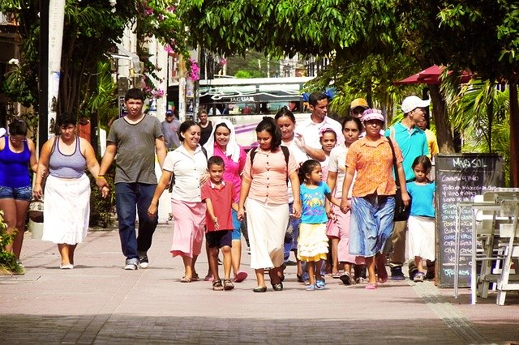

Pixabay
Indicadores de Salud: Aspectos conceptuales y operativos (Sección 2). Washington, D.C.: OPS, s.f.

Pixabay
Barceló MA et al. Métodos para la suavización de indicadores de mortalidad: aplicación al análisis de desigualdades en mortalidad en ciudades del Estado español (Proyecto MEDEA). Gac Sanit. 2008;22(6):596-608.
El análisis más simple de las desigualdades geográficas de indicadores de salud pudiera ser
hacerse a través de mapas de enfermedades representando los casos o muertes observadas en cada
área geográfica. Sin embargo, cualquier interpretación en la estructura geográfica de los casos
está limitada por la falta de información sobre la distribución espacial de la población que
podría estar «en riesgo» y, consecuentemente, ha generado esos casos observados. Por tanto, se
prefiere la representación de tasas que permitan incorporar el efecto de la población en riesgo,
en vez de representar los casos brutos.
Sin embargo, cuando el interés es comparar
indicadores de población entre distintas áreas geográficas debe considerarse que las poblaciones
pueden diferir por un gran número de variables, lo cual determina, por sí mismo, riegos de
enfermarse y morir distintos. La edad, el sexo, origen étnico, nivel socioeconómico, son
variables que influyen en gran medida en esa diferenciación. Por lo tanto, el uso directo de las
tasas brutas no permite la comparación entre distintas áreas, ya que las diferencias observadas
entre ellas pueden deberse a factores de riesgo principalmente demográficas como la edad y el
sexo.
Para evitar conclusiones erróneas en la comparación de tasas entre distintas áreas
geográficas se ha usado como estrategia no solamente el cálculo de indicadores separados para
hombres y para mujeres, sino también el uso de métodos matemáticos que anulen el efecto de esa
distribución demográfica desigual, lo cual se conoce como la estandarización o ajuste de las
tasas por edad.
Veamos en qué consiste el método de estandarización o ajuste:
2.1. Indicadores estandarizados o ajustados por edad
Dado que la mortalidad es un evento cuyo riesgo incrementa con la edad, aquellos municipios con alta densidad de población adulta mayor presentan, generalmente, las más altas tasas de mortalidad cuando comparados con aquellos municipios con poblaciones más jóvenes. Esto es especialmente evidente para los casos de mortalidad de causas que están fuertemente asociadas con la edad.
Las tasas de mortalidad general en países con diferente esperanza de vida pueden ofrecer la
falsa idea de mayor riesgo de muerte en los países con mayor número de adultos mayores.
También pudiera observarse que en municipios que tienen mayor proporción de adultos mayores
podrían aparecer en el mapa con los mayores riesgos de mortalidad por enfermedades
cerebrovasculares cuando son comparados con municipios con menores proporciones de adultos
mayores.
Este resultado llevaría a conclusiones incorrectas que en parte, o del
todo, pueden ser explicadas por las diferencias en la estructura por edad de la población.
Hay dos métodos para la estandarización por edad, que se conocen como estandarización directa e
indirecta.
En la representación de los mapas, particularmente de mortalidad, el método
más utilizado es la estandarización indirecta de las tasas, que consiste en la comparación de
las muertes observadas en un área con las esperadas si las tasas de mortalidad para cada grupo
de edad fueran los mismos que en cierta población de referencia. La razón observada/esperada se
llama Razón de Mortalidad Estandarizada (RME), que no es más que un estimador del riesgo
relativo del área, es decir, el riesgo de muerte en relación con el grupo considerado de
referencia.
En general, los atlas que exploran de manera geográfica indicadores de mortalidad a escalas geográficas subnacionales, utilizan como población de referencia la propia población nacional. Esto se conoce como “estandarización interna”
Comúnmente, la RME es multiplicada por 100, donde 100 es el riesgo de mortalidad promedio, es decir el riesgo de la población de referencia.
El Atlas de la Salud de Colombia representa RME de indicadores de mortalidad para los municipios de Antioquia, utilizando como referencia a la población de toda Antioquia. En este caso, supongamos que el valor de la RME para el municipio de Angelópolis por enfermedades transmisibles es de 180, esto indica que este municipio presenta un riesgo de mortalidad 80% mayor que el riesgo de Antioquia. En otras palabras, este municipio tiene un número de muertes observadas mayor que las esperadas si el municipio tuviera la estructura de mortalidad de Antioquia. Para este mismo municipio, su RME para neoplasias fue de 40 indicando en este municipio tiene un riesgo de mortalidad 60% menor que el riesgo del departamento. Es decir, dicho municipio tiene un número de muertes observadas menor que las esperadas.
Este método sugiere ser el más apropiado cuando se analizan áreas geográficas con escaso
número de población, resultando en estimaciones de tasas más precisas. Por esto es el método
de estandarización más común para los indicadores que se representan en mapas con el
objetivo es explorar sus variaciones geográficas.
Es importante mencionar que bajo
la estandarización indirecta, la comparación de las RME entre dos o más municipios es sólo
posible mediante comparaciones indirectas a través de la población de referencia.
¿Es lo mismo una Razón de Mortalidad Estandarizada (RME) y un Riesgo de mortalidad estandarizado?
Es común que la Razón de Mortalidad Estandarizada sea interpretada como riesgo relativo de mortalidad, dado que ésta representa el riesgo relativo de mortalidad de un municipio comparado con el riesgo promedio de su población de referencia.
Ahora veamos cómo se comporta este estimador del riesgo en áreas geográficas pequeñas.
2.2. La RME en áreas geográficas pequeñas

Las RME, aun cuando han sido ampliamente utilizadas en los atlas de mortalidad, tienen algunas limitaciones al ser calculadas para áreas pequeñas. Aunque no hay una definición exacta de lo que se considera un área geográfica pequeña, ya que esta definición dependería del contexto de estudio y del número de casos de la enfermedad analizada, algunos autores han definido un área pequeña como cualquier región cuyo tamaño muestral en un estudio es demasiado pequeño como para producir estimaciones con un nivel de precisión aceptable. Otros autores consideran que las áreas pequeñas son las que presentan menos de 20 casos de enfermedad y con una población que debería ser al menos de 10.000 habitantes.
Los análisis de indicadores de salud a escalas geográficas menores al departamento –como el
municipio por ejemplo– ofrecen ventajas importantes, dado que, en general, áreas geográficas
pequeñas tienden a ser más homogéneas en sus características, mientras que las áreas mayores
tienden a ser más diversas.
En consecuencia, la exploración de eventos de salud a
escalas geográficas pequeñas permite a los entes territoriales e investigadores:
- analizar más detalladamente los patrones espaciales de los eventos de salud
- identificar las diferencias entre las áreas geográficas en la magnitud de ocurrencia de los eventos
- apoyar la búsqueda de explicaciones para tales diferencias
- identificar municipios en alto riesgo
- apoyar la toma de decisiones para la focalización de los recursos y definición de estrategias de salud.
Sin embargo, este tipo de análisis trae desafíos metodológicos que deben considerarse como, por
ejemplo, el efecto que podría tener el reducido número de eventos de una área geográfica sobre
los resultados de las RME. En el análisis de desigualdades geográficas para áreas pequeñas (por
ejemplo municipios, barrios, unidades censales), el problema radica en que éstas áreas pequeñas
además de que tienen poca población, pueden tener pocos casos de mortalidad, por lo que sus
estimaciones de RME son más inestables debido a su gran variabilidad. En este sentido, las RME
extremas y, por tanto, dominantes en los mapas, son aquellas estimadas con menor precisión en
áreas que tienen pocos casos.
Con el fin de solucionar los problemas derivados de la
utilización directa de las RME, se han propuesto varias alternativas para «suavizarlas». Lo más
habitual es utilizar métodos estadísticos para el análisis de eventos muy poco frecuentes, como
la distribución de Poisson, particularmente el modelo propuesto por Besag, York y Mollie (BYM).
Este modelo estima cada una de las RME, combinando el conteo de eventos de cada área
geográfica con el promedio del conteo de eventos de las áreas aledañas. El resultado del modelo
es la estimación de la Razón de Mortalidad Estandarizada y Suavizada (RMEs) para cada
área, cuya interpretación sigue siendo el riesgo de muerte de cada área en relación a la
población de referencia.
Valores de RMEs municipales de 90 o 60 representan municipios con riesgos de mortalidad aproximadamente 10% y 40% inferiores respecto al riesgo promedio de la población de referencia. Los RMEs municipales de 110 o 140 representan municipios con riesgos superiores del 10% y 40% respecto al riesgo promedio de la población de referencia.
La suavización es una técnica estadística que se utiliza para ajustar las fluctuaciones en el riesgo de una enfermedad de áreas geográficas que tienen bajo número de casos o baja población. Una RMEs indica que la RME de cada área geográfica fue estimada combinando la información de mortalidad de cada área (local) con el promedio de la información de mortalidad de las áreas aledañas (vecinas).
Además de la RMEs, el modelo de Besag, York y Mollie (BYM) estima otro indicador muy útil para cuantificar en términos de significación estadística la fuerza de la evidencia sobre el exceso o defecto de riesgo de cada una de las áreas geográficas comparadas con la población de referencia. Este indicador se conoce como Probabilidad a Posteriori (PrP), el cual estima la probabilidad de que cada una de las RMEs sea mayor a100, esto es, la probabilidad de que se una área geográfica presente un riesgo de mortalidad significativamente mayor o menor que el riesgo de la población de referencia (p<0.05).
Áreas con probabilidades mayores al 80% se consideran áreas con riesgos significativamente mayores al riesgo de mortalidad de referencia (p<0.05). Áreas con probabilidades menores al 20% son áreas con riesgos de mortalidad significativamente menores al promedio.
Las áreas geográficas pueden diferir por un gran número de variables, principalmente por su estructura demográfica definida por la edad y el sexo. Por lo tanto, para garantizar la pertinencia en las comparaciones en los riesgos de mortalidad de las áreas geográficas, se recomienda la estimación de indicadores indirectamente estandarizados por edad para hombres y para mujeres.
Identifiquemos ahora los diferentes metodologías para representar estos indicadores y para
mejor comunicar las conclusiones en términos de desigualdades geográficas.
Haz clic
en siguiente para continuar.
Wikimedia
C. Borrell, M. Rué, M. I. Pasarín, J. Benach y cols.— La medición de las desigualdades en salud. Gac Sanit 2000;14(Supl. 3):20-33.
Indicadores con poca variabilidad geográfica nos llevarán a un análisis poco ilustrativo en términos de desigualdades. Por lo tanto, el paso inicial en el análisis de desigualdades geográficas es el cálculo de medidas descriptivas que proporcionen una idea de la necesidad de análisis de dichas desigualdades.
En el monitoreo de las desigualdades geográficas se puede utilizar una amplia gama de herramientas para la presentación visual y estadísticas de desigualdades siendo las más utilizadas las que se describen a continuación:3
3.1. Mapas
El primer paso es la inspección visual de la distribución en las diferentes áreas geográficas del indicador de salud (lo que se conoce como desigualdad total), así como también de los estratificadores de equidad. Los mapas entonces se convierten en la primera forma de representación de la desigualdad total, proporcionando un resumen visual de la información para identificar patrones geográficos que de otro modo podrían pasar inadvertidos en las presentaciones tabulares.
Comúnmente, el análisis de desigualdades geográficas de la mortalidad se realiza a escalas geográficas como el municipio o menores. Para su representación se utilizan mapas con dos tipos de información:
Mapas de representación geográfica de la Razón de Mortalidad Estandarizada (RME)
Este indicador representa el riesgo relativo de un municipio comparado con el riesgo
promedio de la población de referencia. Retomando lo presentado en el capítulo anterior,
la RME se obtiene al estandarizar las tasas de mortalidad por el método indirecto que,
el cual compara las muertes observadas en cada municipio en un periodo con las esperadas
para el mismo periodo. Para el cálculo de los casos esperados generalmente se toma como
referencia las tasas de mortalidad por quinquenios de edad del país o departamento al
cual pertenece el municipio (esto se conoce como estandarización interna). De esta
manera, la RME mide el riesgo de muerte de cada municipio con relación al país o
departamento al que pertenece.
Para facilitar su interpretación, la RME es comúnmente multiplicada por 100,
donde 100 es el riesgo de mortalidad del país o departamento. Cuando un municipio tiene
un RME mayor a 100 indica que presenta exceso de riesgo de mortalidad comparado con el
riesgo de referencia. Por el contrario, un municipio con una RME menor que 100 indica
que tiene defecto de riesgo dicho comparado con el riesgo de referencia.
Para la
representación de los RME, los mapas utilizan una escala de colores divergente con siete
categorías (septiles) del RME. La Figura 1 muestra un ejemplo de dicha representación
para un indicador de mortalidad. La categoría del medio (blanco) representa riesgo
similar al del promedio del departamento de Antioquia, y los otros colores representan
municipios con riesgos mayores que el promedio de Antioquia (tonos marrones) o menores
que el promedio de Antioquia (tonos verdes).
Mapas de alta probabilidad de exceso o defecto de riesgo
Estos mapas deben ser interpretados en conjunto con el respectivo mapa del RME. El mapa
de probabilidad indica la fuerza estadística de la evidencia sobre el exceso o defecto
de riesgo de cada una de los municipios comparados con la población de referencia.
En la Figura 2, municipios en color rojo indican que son municipios en donde hay una
probabilidad mayor del 80% de tener un RME superior al riesgo promedio de referencia
(exceso de riesgo). Mientras que los municipios en color verde indican son los
municipios en donde hay 80% de probabilidad o más de que los riesgos sean menores que el
riesgo promedio (defecto de riesgo).
3.2. Estadística: Medidas de dispersión
La segunda herramienta de análisis es la valoración de la variabilidad de los indicadores de salud en múltiples territorios. Estos cálculos son importantes dado que para indicadores con poca variabilidad su análisis no será muy ilustrativo en términos de las desigualdades geográficas.
Las medidas más utilizadas son:
- La varianza: Esta medida representa una medida absoluta de las desigualdades, y fue reportada en el estudio de Lu TH et al5 para analizar diferencias entre 22 ciudades de Taiwan en la mortalidad por accidentes de tránsito. De acuerdo con los resultados, la varianza entre-ciudades disminuyó de 179 en 1997 a 49 en el año 2008.
- Otra medida ampliamente utilizada es la desviación estándar, la cual fue utilizada con datos de la zona rural de Irán para estimar las inequidades regionales en fertilidad.6 De acuerdo con los autores, la desviación estándar del porcentaje de nacimientos atendidos por personal no calificado evidenció una disminución de la inequidad entre los periodos 1996-2000 y 2001-2005 al pasar de 15.3 a 10.9 puntos porcentuales.
- Finalmente, el coeficiente de variación es frecuentemente utilizado para comparar la magnitud de las inequidades de dos o más indicadores incluso si se miden en diferentes unidades. Una aplicación de esta medida se observa en un estudio con datos de 17 países entre los años 1980 y 19947, el cual mostró una reducción en la tasa de mortalidad en menores de cinco años, pasando de 144.5 a 62.4 muertes por 1000 nacidos vivos, y un incremento en el coeficiente de variación de 28.8 % en 1980 a 52.3 % in 1992.
3.3. Tablas
Manual para el Monitoreo de las Desigualdades en Salud, con especial énfasis en países de ingresos medianos y bajos. Washington, D.C.: OPS, 2016.
En el monitoreo de la desigualdad en salud, las tablas pueden presentarse de manera tal que cada indicador de salud pueda estar desagregado por cada estratificador de equidad. Esto significa que la información presentada muestra la situación para un único indicador de salud en una única dimensión de desigualdad.
asa de mortalidad infantil por zona de residencia, quintiles de cobertura de vacunación contra el sarampión por municipio.
Una ventaja de las tablas es que no existe ambigüedad sobre los valores de los datos, ya que
ellos son presentados explícitamente. Sin embargo, una desventaja de ellas es que carecen de la
interpretación visual inmediata de los gráficos y los mapas y, por tanto, demandan más esfuerzo
por parte de la audiencia para extraer conclusiones.
Se puede facilitar la
interpretación de tablas resaltando valores prominentes, codificando a color valores o celdas o
acentuando la tipografía (como con letras en negrita).
En la tabla 1 se observan datos sobre desigualdad en la mortalidad por causas externas en Antioquia según nivel de riqueza municipal para los años 2000, 2005, 2010 y 2014. De acuerdo a las estimaciones, durante el periodo de estudio Antioquia experimentó una disminución de las desigualdades en sus riesgos de mortalidad. Esto es, que los riesgos de mortalidad en todos los quintiles de pobreza y desarrollo tuvieron una importante disminución a lo largo del periodo.
| Año | Quintil 1 (q1) (más rico) (RME) | Quintil 2 (RME) | Quintil 3 (RME) | Quintil 4 (RME) | Quintil 5 (q5) (más pobre) (RME) |
|---|---|---|---|---|---|
| Hombres (2000) | 111.50 | 121.85 | 139.54 | 121.23 | 113.30 |
| Hombres (2005) | 117.76 | 156.99 | 150.16 | 150.62 | 142.43 |
| Hombres (2010) | 75.05 | 97.02 | 99.13 | 129.47 | 124.05 |
| Hombres (2014) | 59.92 | 79.05 | 86.61 | 80.68 | 70.56 |
| Mujeres (2000) | 114.22 | 137.77 | 160.63 | 135.64 | 109.59 |
| Mujeres (2005) | 113.96 | 116.14 | 128.65 | 138.17 | 143.18 |
| Mujeres (2010) | 101.58 | 107.33 | 115.73 | 128.18 | 122.62 |
| Mujeres (2014) | 62.24 | 81.76 | 80.36 | 83.83 | 89.97 |
Gráficos o figuras
Cómo hacer comprensibles los datos. Parte 2: Una guía para presentar estadísticas. Naciones Unidas, Comisión económica para Europa. Ginebra, 2009. Recuperado de https://www.unece.org/
Las estadísticas a menudo pueden entenderse mejor si se presentan en un gráfico en lugar de en una tabla. Un gráfico es una representación visual de los datos estadísticos mediante símbolos como barras o líneas. Es una herramienta visual muy eficaz, ya que muestra datos de manera rápida y sencilla, facilita la comparación y puede revelar las tendencias y las relaciones entre los datos.
Los gráficos que reportan sobre el monitoreo de la desigualdad en salud presentan la información de manera simple, clara y precisa. Entre los más utilizados se encuentran los gráficos de líneas, gráficos de barras y gráficos de Equiplot.
Veamos en qué consiste cada tipo:
Finalicemos el estudio de este documento, abordando elementos importantes de la temática:
Ahora te invitamos a realizar las siguientes actividades que te permitirán validar los contenidos abordados. Es importante leer con atención las instrucciones para resolverlas correctamente.
Objetivo de aprendizaje: Reconocer elementos característicos de los indicadores de salud para análisis de desigualdades geográficas.
Enunciado: Identifica para cada afirmación, si es correcta o no, según lo que has estudiado en este documento sobre los indicadores ajustados por edad.
¡Ha finalizado!
Al clasificar ha tenido los siguientes aciertos y desaciertos:
Aciertos:
Desaciertos:
Objetivo de aprendizaje: Reconocer elementos característicos de los indicadores de salud para análisis de desigualdades geográficas.
Enunciado: Selecciona la(s) respuesta(s) correcta(s) para completar la siguiente afirmación.
Este método sugiere ser el más apropiado cuando:
- Se analizan áreas geográficas con escaso número de población
- La población de las áreas geográficas difieren por edad
- Se espera como resultado estimaciones de tasas poco precisas
- Se comparan municipios que tengan un número pequeño de población
- Se desean comparar los casos
¡Excelente!
Has reconocido para qué se utiliza el método indirecto. Recuerda que este es tan solo uno de los métodos existentes en el proceso de estandarización o ajuste de tasas. El método indirecto es el más utilizado para los indicadores que se representan en los atlas de mortalidad, dado que corrige la alta variabilidad en la distribución de la población en el espacio.
¡Bien!
Aunque identificaste parcialmente para qué se utiliza el método indirecto, te falta reconocer otros elementos característicos. Estudia un poco más y reintenta la actividad hasta que puedas responder correctamente al enunciado.
Objetivo de aprendizaje: Reconocer elementos característicos de los indicadores de salud para análisis de desigualdades geográficas.
Enunciado: Selecciona la respuesta correcta para completar la siguiente afirmación.
Por ello, una RME suavizada (RMEs) permite:
- indicar que el riesgo relativo de cada municipio fue estimado combinando la información de mortalidad de cada municipio (local) con el promedio de la información de mortalidad de los municipios aledaños (vecinos)
- expresar la razón de mortalidad multiplicada por 100
- representar indicadores ajustados por edad
¡Excelente!
Has reconocido en qué consiste una RMEs. Recuerda que este método estadístico te permite reducir el impacto del “número pequeño” en los conteos de casos o de población característicos de las áreas geográficas pequeñas. Por lo tanto, esta metodología resulta muy útil cuando tu interés sea analizar indicadores de salud a escalas geográficas menores a las departamentales, por ejemplo municipios, barrios o unidades censales.
¡Bien!
Aunque identificaste parcialmente en qué consiste una RMEs, aún falta reconocer otros elementos característicos. Estudia un poco más y reintenta la actividad hasta que puedas responder correctamente al enunciado.
Objetivo de aprendizaje: Identificar las formas más comunes de analizar las desigualdades de la salud.
Enunciado: Selecciona la(s) respuesta(s) correcta(s) para completar la siguiente afirmación.
Selecciona aquella(s) respuesta(s) correcta(s):
- Estadísticas
- Mapas
- Tablas
- Figuras
- Multiplicadores
- Indicadores
¡Excelente!
Has identificado cuáles son las formas más comunes de analizar desigualdades. Recuerda que lo más importante es la claridad en la forma como representas los indicadores, permitiendo llegar a conclusiones sobre su variabilidad y distribución en el espacio.
¡Bien!
¡Bien! Aunque identificaste algunas formas de analizar desigualdades, aún falta reconocer otros elementos importantes. Estudia un poco más y reintenta la actividad hasta que puedas responder correctamente al enunciado.
- Barceló MA et al. Métodos para la suavización de indicadores de mortalidad: aplicación al análisis de desigualdades en mortalidad en ciudades del Estado español (Proyecto MEDEA). Gac Sanit. 2008;22(6):596-608.
- C. Borrell, M. Rué, M. I. Pasarín, J. Benach y cols.— La medición de las desigualdades en salud. Gac Sanit 2000;14(Supl. 3):20-33.
- Cómo hacer comprensibles los datos. Parte 2: Una guía para presentar estadísticas. Naciones Unidas, Comisión económica para Europa. Ginebra, 2009. Recuperado de https://www.unece.org/fileadmin/DAM/stats/documents/writing/MDM_Part2_Spanish.pdf
- Equiplot: A Chart to Display Equity Data. Health Intelligence. Analyzing health data, generating and communicating evidence to improve population health. 2011-2017. Recuperado de http://publichealthintelligence.org/content/equiplot-chart-display-equity-data
- Indicadores de Salud: Aspectos conceptuales y operativos (Sección 2). Washington, D.C.: OPS, s.f.. Recuperado de https://www.paho.org/hq/index.php?option=com_content&view=article&id=14402:health-indicators-conceptual-and-operational-considerations-section-2&Itemid=0&lang=es
Desarrollo de Contenidos
Beatriz Elena Caicedo VelásquezProfesora asociada. Universidad de Antioquia. Facultad nacional de salud pública
Asesoría Técnica y Diseño Instruccional
Carolina Llanos TobónDiseño Gráfico
Santiago Hernández RestrepoIntegración de Contenidos
Sebastián Paniagua IsazaGestión Técnica y Administrativa
Carolina Llanos Tobón
1ª edición: diciembre 2013